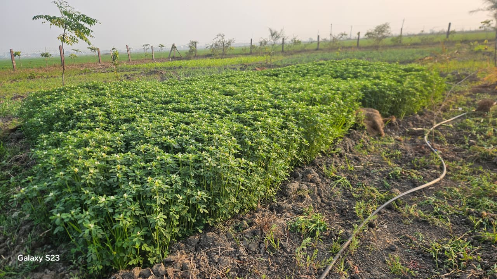
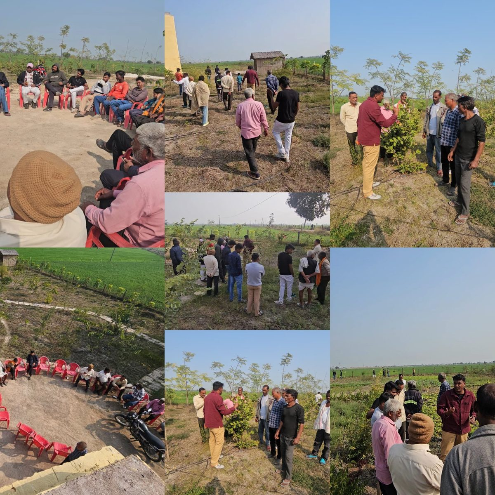
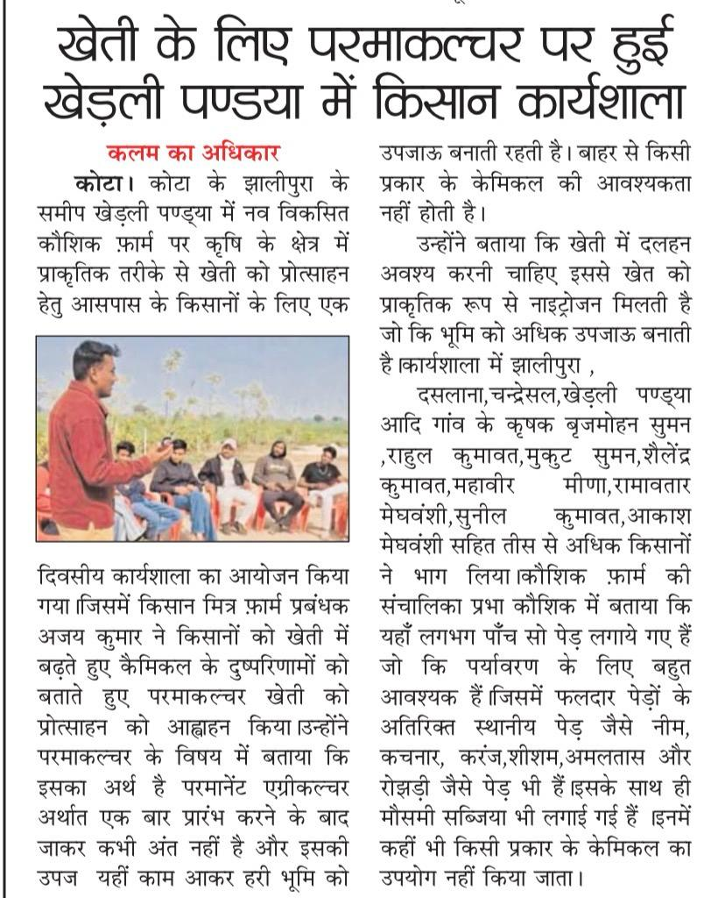
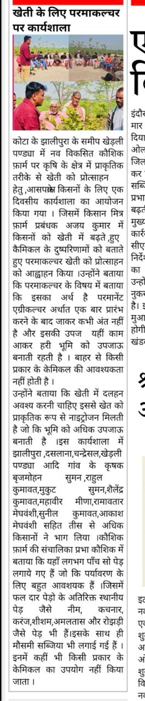

Kota Natural Farm
Growing regeneratively. Teaching sustainably. Living harmoniously.
Discover Our StoryWhat is Permaculture?
Permaculture is a design philosophy that mimics natural ecosystems to create sustainable, self-sufficient food systems. At Kota Natural Farm, we work with nature, not against it.
Our approach builds healthy soil, conserves water, increases biodiversity, and produces abundant harvests without synthetic chemicals or excessive external inputs.
🌱 Observe & Interact
We study our land's patterns before taking action, designing systems that work with natural flows.
♻️ Closed-Loop Systems
Waste becomes resource. Compost feeds soil. Mulch retains water. Everything cycles.
🌍 Build Resilience
Diverse crops, healthy ecosystems, and regenerative practices create farms that thrive for generations.
Our Practices
Green Manure & Cover Crops
We plant nitrogen-fixing legumes and diverse cover crops to naturally fertilize the soil, suppress weeds, and prevent erosion.
Water-Smart Irrigation
Drip irrigation systems deliver water directly to plant roots, reducing waste and ensuring every drop counts.
Food Forests
Multi-layered plantings of fruit trees, shrubs, and perennials create productive ecosystems that require minimal maintenance.
Natural Composting
All natural matter cycles back into nutrient-rich compost, building soil fertility naturally over time.
Companion Planting
Strategic plant partnerships naturally repel pests, attract beneficials, and enhance growth without chemicals.
Mulching
Thick natural mulch layers retain moisture, regulate temperature, feed soil life, and eliminate weeding.
From Our Fields
Loading…
Getting Started with Permaculture
Anyone can begin their permaculture journey. Here's how:
Observe Your Space
Spend time watching sun patterns, water flow, wind direction, and where plants naturally thrive. Understanding your land comes before any action.
Start Composting
Create a compost pile from kitchen scraps and yard waste. This free, nutrient-rich soil amendment is the foundation of natural growing.
Build Healthy Soil
Add natural matter, use mulch, plant cover crops. Healthy soil equals healthy plants. Focus on feeding the soil, not just the plants.
Plant Perennials
Start with easy perennial crops like fruit trees, berries, or herbs. They establish once and produce for years with minimal maintenance.
Learn & Connect
Join local permaculture groups, take workshops, read books. Community knowledge accelerates your journey and provides ongoing support.
Community & Education
At Kota Natural Farm, we believe knowledge grows when shared. We regularly host workshops, farm tours, and hands-on learning experiences to empower others on their permaculture journey.

Together, we're building a regenerative future—one garden, one farm, one community at a time.
In the News
Our permaculture workshops and farm practices have been featured in local press.

Permaculture Workshop at Khedli Pandya
Kalam Ka Adhikar
A one-day workshop was organized near Kota's Jhalipura at Khedli Pandya for local farmers to promote natural farming methods through permaculture.

Farmer Workshop on Permaculture for Agriculture
Local Press
Farm manager Ajay Kumar encouraged farmers to move away from chemical farming and adopt permaculture. Over 30 farmers from nearby villages participated.